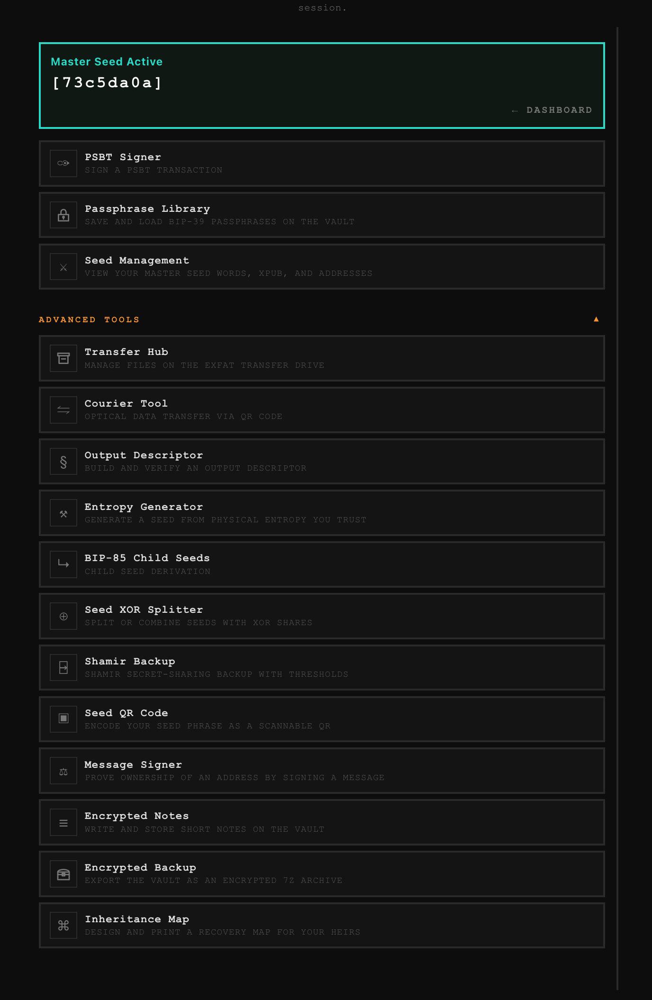
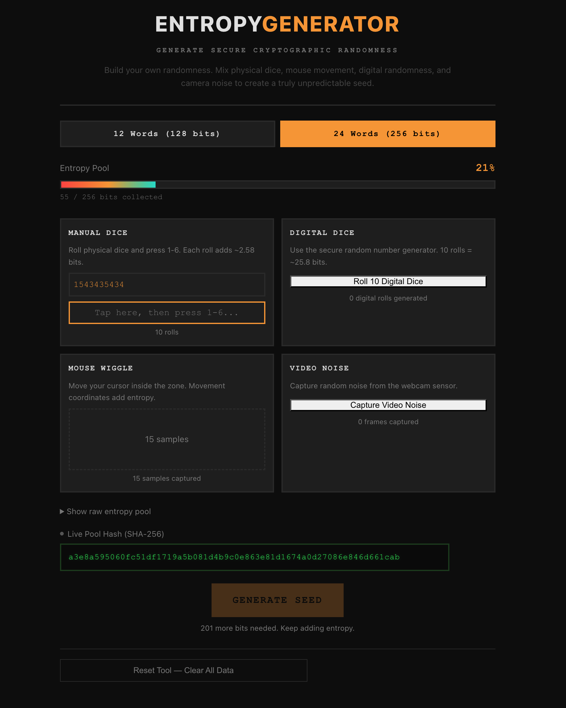
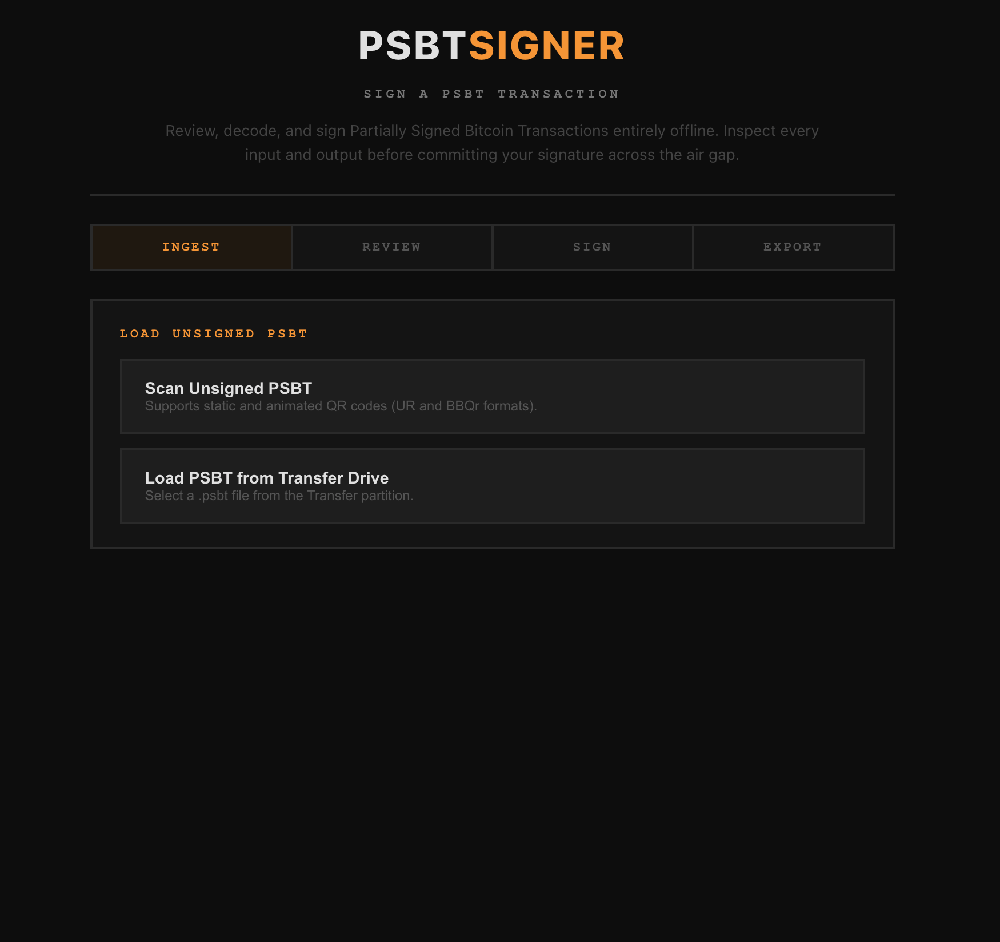
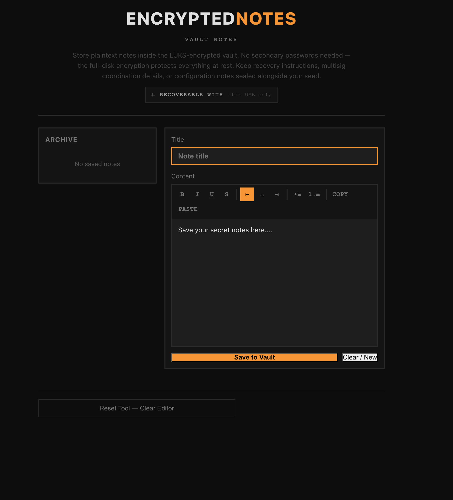

What’s inside the vault
Features
Designed to keep your keys offline · Built for Bitcoin self-custody
Architectural Security
SafeKeepVault initializes in a hardened, pre-configured state. Every boot is a fresh start in a locked-down environment—no configuration required, no vulnerabilities exposed. It is purpose-built to be secure by default, every single time.
Absolute Air-Gap
- Total Network Isolation Wi-Fi, Bluetooth, and cellular radios are disabled at the kernel level before the system initializes. Your private keys never encounter a network interface.
- Hardware Lockdown Non-essential peripherals, including microphones and speakers, are deactivated. The system communicates exclusively with your display, keyboard, camera, and the USB drive itself.
Zero-Footprint Operations
- Host Integrity SafeKeepVault operates in complete isolation from your computer's internal storage. Your hard drive is never mounted, read, or modified, ensuring your host OS remains untouched.
- Volatile Memory Execution By running entirely in RAM, all session data—including keys and clipboard history—is instantly purged upon shutdown. No traces are ever written to the local hardware.
Professional Versatility
- Persistent or Stateless Choose your workflow for every session. Utilize the Encrypted Vault to securely store keys for recurring use, or run Stateless for a high-privacy, "one-and-done" environment.
- Streamlined Authentication Access your encrypted storage with professional-grade speed. Authenticate by scanning a secure QR code via your mobile device or through traditional high-entropy password entry.
- Plausible Deniability Transform any standard PC into a signing station without specialized, branded hardware. To an outside observer, your vault is an indistinguishable, everyday USB drive.
The Arsenal
A comprehensive suite of fifteen specialized tools covering the entire Bitcoin lifecycle: generation, backup, sharding, derivation, signing, and inheritance planning. Every utility operates within a strictly air-gapped environment, producing standardized outputs compatible with any industry-standard wallet or coordinator.
- PSBT Signer
- Passphrase Library
- Seed Management
- Transfer Hub
- Courier Tool
- Output Descriptor
- Entropy Generator
- BIP-85 Child Seeds
- Seed XOR Splitter
- Shamir Backup
- Seed QR Code
- Message Signer
- Encrypted Notes
- Encrypted Backup
- Inheritance Map

SafeKeepVault tools dashboard — all fifteen tools organized under Core Tools and Advanced Tools, with an active master seed" >
SafeKeepVault's entropy mixing tool, showing manual dice, digital dice, mouse wiggle, and video noise sources" >
SafeKeepVault's transaction signing tool, showing the ingest, review, sign, and export workflow" >
SafeKeepVault's vault notes tool, showing a rich-text editor stored inside the encrypted vault" >Seamless Ecosystem Integration
SafeKeepVault functions as the hardened security layer for the software you already trust. While your primary wallet manages transaction history and balances, SafeKeepVault isolates your private keys in a strictly offline environment. Simply transfer unsigned transactions (PSBTs) via QR code or USB, sign them air-gapped, and return the signed data to your coordinator for broadcasting. Your keys remain entirely decoupled from the internet.
Advanced Multisig Coordination
SafeKeepVault simplifies complex multi-signature workflows without requiring multiple hardware devices. Sign with your primary key, then temporarily initialize additional keys from backup shards or paper wallets to complete the transaction. These secondary keys exist only in volatile memory and are permanently purged the moment you clear the session or power down.
Native Compatibility
- Sparrow Wallet Use Sparrow as your desktop coordinator to track balances while delegating all signing authority to SafeKeepVault's air-gapped environment via file or QR transfer.
- Electrum Effortlessly bridge your cold storage with Electrum. SafeKeepVault exports native, ready-to-import wallet files and supports Electrum's QR standards with no manual conversion required.
- Nunchuk Experience streamlined mobile coordination. SafeKeepVault offers full compatibility with Nunchuk's QR-based signing flow for a fast, secure "scan-and-broadcast" experience.
- BlueWallet Maintain mobile oversight of your assets. Import your public keys into BlueWallet for on-the-go monitoring, while keeping the signing process securely contained within SafeKeepVault.
What’s New in v1.1b
Full interoperability with Nunchuk and Electrum — the two strictest wallet implementations in the ecosystem. Workflows that required manual conversion steps now complete in a single scan.
- Compat Flawless Nunchuk integration. SafeKeep outputs pure, un-prefixed Raw Hex QR codes. Nunchuk scans and broadcasts without any intermediate conversion step.
- Compat Complete Electrum round-trip. A custom Base43 decoder built into SafeKeep’s camera reads Electrum’s proprietary PSBT format natively — the last manual step is gone.
-
New
Electrum skeleton wallet export.
SafeKeep generates a
[FINGERPRINT]-electrum.jsonfile with the correct descriptor, derivation path, and little-endianckcc_xfpfield for instant watch-only wallet creation.
Download
Verify the signature against the maintainer's public key before writing the image to a USB drive. The verification guide walks through the procedure end to end.